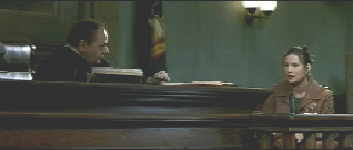

Coulmbia Tristar/1996/118m/ANA,WS 2.35, FS1.33
 |
Demi doesn't do newspapers. ©Columbia Tristar |
When a Mafioso don goes on trial for murder, it seems like an open and
shut case. But mob associates pick out a female juror to terrorize and control. The first
big problem with The Juror is when the Annie Laird, the juror of the title, is
given every chance to get off the jury, she even goes so far as to tell the judge that she
doesn't even have time to read a newspaper, then blithely welcomes her civil chores.
Demi Moore play the struggling artist and single mother who becomes the target of the mob boss's "fixer." Moore caves in pretty easily until she has no choice but to fight back. Alec Baldwin, who's getting a reputation as a specialist is assaying screen creeps, plays the deviantly sophisticated mobster who invests himself into the Laird household. Tony LoBianco adds some spice as a cliche mob figure. The wind-up takes place in rural South America, and seems a bit far fetched even for frivolous movie fare.
The jury on this DVD is in with a verdict of top-notch. Images are sharp as the medium allows with no hint of MPEG or NTSC artifacts. Deep blacks, bright colors and excellent contrast are hallmarks of the fine The Juror DVD. The Dolby Digital 5:1 surround is full range and engaging. The Juror doesn't strain viewers attention spans beyond the breaking point and the players are enjoyable.
 ã1998 Stuart J. Kobak ,
all rights reserved.
ã1998 Stuart J. Kobak ,
all rights reserved.